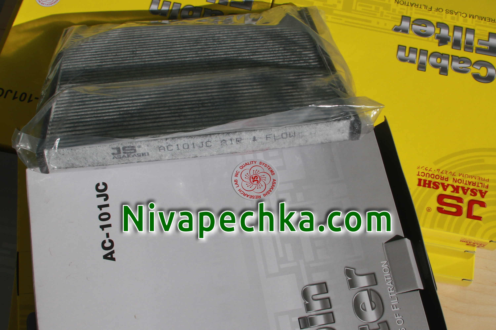

Нива-печка 2108 cалонный фильтр Asakashi типа AC-101 направление установки.
Обновлено:
Если вы здесь, значит у вас есть автомобиль Нива :-) и вы интересуетесь какой фильтр можно установить в печку Нивы. Мы комплектуем Нива-печка 2108 cалонным фильтром Asakashi типа AC-101.

Устанавливая в Нива-печка cалонный фильтр Asakashi типа AC-101 важно соблюдать направление установки. На торцевой части салонного фильтра
срелкой показанно направление потока воздуха через фильтр AC-101. Приправильной установке салонный фильтр лучше выполняет свои функции и оказывает меньшее
сопротивление воздушному потоку и не нарушается естественная вентиляция солона в Ниве.
Нива-печка 2108 cалонный фильтр Asakashi типа AC-101 направление установки.